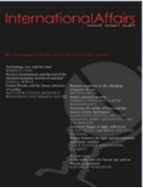

收录于合集

作品简介
【作者】
Jess Gifkins，曼彻斯特大学国际关系讲师；
Samuel Jarvis，约克圣约翰大学(York St John University)国际关系讲师；Jason Ralph，利兹大学国际关系教授，昆士兰大学名誉教授。
【编译】 朱曈菲 （国政学人编译员 伦敦国王学院）
【校对】 石雨宸
【审核】 戴赟
【排版】 梁鑫昱
【来源】 Jess Gifkins, Samuel Jarvis, Jason Ralph, Brexit and the UN Security Council: declining British influence?, International Affairs, Volume 95 , Issue 6, November 2019, Pages 1349–1368
期刊简介

International Affairs （《国际事务》）是国际关系领域的一流学术期刊，也是多学科综合性学术期刊。本刊于1992年由伦敦皇家国际事务研究所查塔姆学院(Chatham House)创立，内容来源广泛，力图囊括业内专家、学术新秀对重点、热点问题的最新思考。期刊影响因子为3.748，在91种国际关系类刊物中位列第5名。
英国脱欧与联合国安理会:正在衰退的英国影响力?
Brexit and the UN Security Council：declining British influence
内容摘要
本文首先介绍了联合国中外交实践与解释主义的研究方法，并用以阐释英国在联合国安理会通过外交实践来发挥自身影响力的方式。文章通过索马里与也门两个案例研究，概述了在脱欧背景下，英国不同的战略选择可能对其在安理会的影响力带来变化。
文章导读
英国脱欧公投后，时任英国驻联合国大使的马修·里克罗夫特(Matthew Rycroft)称 “联合国将日益成为英国的世界之窗”。 本文通过关注英国如何在联合国安理会发挥影响力来评估英国脱欧是否确实阻碍了英国的影响力。作者认为，英国在安理会的影响力并没有达到一个“大国”应有的程度。它既无法像美国或（日益崛起的）中国那样利用物质资源来发挥影响力，也不行使否决权来影响安理会，而是主要依靠其外交专长、声誉和关系网络（network）等资源来影响安理会。因此，本文的分析将侧重于上述这些领域。根据国际关系理论中的“实践转向”概念（practice turn），作者将这些资源理解为英国可用于“购买”（purchase）影响力的“资本”（capital）。本文认为， 英国脱欧可能会导致这些资本贬值 。更具体地说，脱欧会削弱英国作为外交推广手段的关系网络，反过来又会损害国家作为有效领导者的声誉，从而降低其影响力。
01
如何才能在联合国安理会发挥影响力?
在多边外交中，政治资本影响谈判能力。本文在进行访谈研究后认为，为了保持政治资本，国家需要不断对自身的技能、外交关系和声誉进行投资，而以下三个属性对英国在联合国安理会内发挥影响力具有重要意义。首先是“执笔”的权力（pen holding）（联合国术语，指在决议起草过程中发挥主导作用）。这是过去十年来出现在安理会的一种作法， 一国对特定议题的主要决议草案拥有政治所有权，这一作法使“执笔者”（penholder）具有相当大的影响力 ——他们可以解释情况和框架选择，甚至可以决定何时产生以及是否要产生一项决议草案。其次， 联合国常驻代表团的外交技巧 是政治资本的另一重要来源。那些受人信任与尊重，并且熟知该在何时以及在何种程度上推动谈判发展的外交官，比其他人更有影响力。受访者都清楚地认识到，即使在联合国内部，安理会也是一个独特的机构，需要时间学习如何在其中发挥影响力。第三， 一国常驻代表的个人素质可以提高（或降低）该国所能发挥的影响力 。
以实践为基础的研究是采访的重点。本研究强调收集对个体的看法和详细说明行动的重要性，以帮助突出可能“隐藏在联合国安理会宏观决策”中更广泛的动态和权力结构，这有助于强调个人在联合国外交中被忽视的作用。
02
英国在联合国的政治资本
上述的特质和属性阐明了一般情况下，如何在联合国安理会发挥影响力——这对英国决定脱欧来说意味着什么？如前所述，英国和法国一直是安理会中最活跃的国家——尤其是在“治理”议题上（governance agenda）。由于担心投否决票会让外界认为自己是“大国同盟”中站不住脚的成员，英法自上世纪80年代以来就没有投过否决票。它们对治理问题，特别是在人道主义和人权问题上采取积极的态度，往往被视为是保持自身常任理事国地位合法性的手段。因此，在安理会关注人道主义和人权议题不仅是价值问题的考量，这对于英国在安理会中称职和负责任的声誉也至关重要，反过来又有助于英国外交官捍卫英国永久合法化地位的国家利益。在这里，“战略”（strategic）和“战术”（tactical）合并了，如果说英国政府在捍卫安理会地位上有战略利益，那么英国驻纽约外交官在领导人道主义和人权等治理问题上的战术优势，就应该被视为推进国家利益的资产。放弃对这些领域的领导，或以国家利益高于安理会的人道主义和人权关切的方式进行领导，都将使英国的影响力受损。
“执笔者”的身份是受访者最常提到的影响力的关键指标。在这个方面，英国是起主导作用且富有成效的行为体。2019年，在联合国安理会的39个议程项目中，英国是其中12个项目的发起者——几乎占总数的三分之一，而平均值是1 / 15。在缅甸、也门、以及在武装冲突中保护平民、妇女、和平与安全议程等突出议题领域，英国都是“执笔者”。
在影响力方面的其他两个关键指标——外交技巧与常驻代表的声誉上——本研究的调查结果证实了阿德勒-尼森（Adler- Nissen）和普里奥（Pouliot）的结论，即英国驻联合国代表团“因其在许多法律技术方面的卓越能力受到广泛认可”。英国代表团是联合国最大的代表团之一，它比较成功地将其派出的官员安排在秘书处的关键职位上，加强了英国在秘书处的话语权和影响力；当然，英国的否决权可以影响非正式讨论，使得共识向英国的立场倾斜。安理会谈判通常用英语进行，这使英国外交官在语言方面比非英语国家的外交官更有优势。本研究的受访者指出，英国在影响的三个关键指标上都表现良好。
虽然英国常驻联合国代表团(UKMIS)在联合国的外交环境中拥有高水平的政治资本，但这些技能和专业知识不是理所当然的，它们需要通过英国对外交部门持续的高水平投资来维持。欧盟成员国的身份以及在联合国强有力的外交被视为维持英国海外影响力的关键因素。自2016年英国脱欧公投以来，为了继续维持英国的海外影响力，英国外交部在伦敦和海外创造了超过250个新职位。然而，与英国公务员体系的其他部门相比，英国外交部的岗位增幅是2016年以来最小的。英国议会中的一个特别委员会在一份2018年的报告中称，英国外交部的预算“太低”且“太空洞”。此外，这些削减应当被放在英国紧缩政策的更大背景下来理解。在英国联合政府2010年～2015年的5年任期内，英国外交部损失了超过四分之一的实际预算。英国脱欧公投前夕资金不足的问题，大大加剧了英国将影响力转移到欧盟以外的挑战。因此，尽管有大量的政治资本可供英国常驻联合国代表团（UKMIS）使用，但随着联合国在英国全球战略中的重要性日益提高，英国将需要保持或增加对其代表团的财政和政治投资。
尽管英国在即将脱离欧盟之际，仍拥有可观的政治资本，但英国脱欧的声誉成本是巨大的。英国的声誉已经因此而受损，且英国作为一个称职、高效的国际角色的声誉也已被削弱。此外，受访者还指出，英国缺乏长期的全球视野。如果英国政府不提供明确的新目标（战略），这反过来意味着英国常驻联合国代表团(UKMIS)无法制定实现这些目标的战术，增加英国无法在安理会发挥领导作用的风险。
03
英国与索马里
安理会的议程日益复杂，工作方法也有所调整。法国、英国和美国(“三个常任理事国”，或称P3)开始以提高效率为由开始带头起草决议，并在提请安理会其他成员国之前就彼此文本首先达成协议。这种做法被批评为加深了“谈判和协商的鸿沟”—— 英国外交官意识到了这一批评，并试图解决这一问题。事实上，本研究的采访数据显示，英国被视为更具有协商性和可信度的常任理事国之一。这里想要阐述的重点是：这种做法和英国的方式方法有助于英国影响安理会的议程。英国也确实在许多问题的解决上处于领先地位，比如索马里问题。
自2007年成立以来，非盟索马里特派团(AMISOM)取得了一些成就。然而，任何试图将其描述为英国领导力成功故事的尝试，都必须承认这是英国结合自身在联合国和欧盟中的影响力所得到的结果。可以说，英国在联合国获得的授权基本上都是由欧盟提供的。事实上，自2007年以来，欧盟已经向非盟驻索马里特派团提供了超过16亿欧元的支持，并在2018年通过非洲和平基金(APF)向特派团资助了80%的费用。如果英国不是欧盟成员国，情况可能不会是这样。
对英国而言，在联合国安理会和欧盟内部保持有效协调行动与优先事项的能力具有战略意义。若英国失去了在布鲁塞尔的发言权，那么欧盟可能会重新调整其优先事项，并更倾向于法国优先。 英国与欧盟关系中的这种新动态会影响到英国在联合国安理会中常任理事国的角色合法性，想要不依靠欧盟来提供同等水平资源可能会超出英国财政部的承受范围，使英国更难维持其声誉及影响力。
04
英国与也门
英国在也门问题中也扮演了“执笔者”的角色，但也门内战和随后爆发的人道主义危机导致英国在安理会的领导地位一直遭到严厉批评。英国处境艰难，尤其是在2019年下半年，——在瑞典举行和平谈判的背景下，安理会讨论并通过了一项关于人道主义问题的决议。美国支持沙特反对英国的提议，并建议安理会的任何决议都不要涉及人道主义问题。2018年12月21日，英国起草的决议获得通过。该决议坚持停火，并要求执行《斯德哥尔摩协定》（Stockholm Agreement）的各项条款。然而该决议在保证人道主义援助和追究战争罪行责任的必要性方面删去了很多内容。面对美国可能投否决票的情况，英国几乎无法进一步推动人道主义议程。但是，英国的妥协被解读为其在海湾地区的国家利益的反映。例如，人权观察(Human Rights Watch)指出，自2015年也门冲突升级以来，英国已向沙特阿拉伯出售了至少价值47亿英镑的武器。英国上议院国际关系特别委员会(House of Lords Select Committee on International Relations)认为，这种关系“勉强”将英国置于国际人道主义法的错误一边。英国上诉法院还于2019年6月裁定，英国向沙特阿拉伯出售武器是非法的。
那么，这种处境与英国脱欧有什么关系呢？当然，在英国外交政策中，人权和人道主义议程、与美国的特殊关系以及对海湾地区的军售之间的紧张关系并不是什么新鲜事。然而，通过英国脱欧的角度来观察形势，本研究的受访者推测： 未来英国外交政策的方向将更倾向于商业利益，而非自由主义和人道主义价值观。
05
总结
与欧盟成员国不同，英国在联合国安理会的常任理事国席位得到了英国政界的广泛支持。它将国际主义者和民族主义者团结在一起，前者将其视为和平解决全球挑战的重要平台，后者则将其视为对英国大国地位的认可和“超越自身影响力”的展示。在英国脱欧将对英国在联合国的地位和影响力产生何种影响，以及需要采取何种措施来维持英国的地位和影响力等问题上，学界存在意见分歧。例如，“让英国退出欧盟”(Get Britain Out)运动组织的研究员马斯普拉特(Muspratt)认为，英国脱欧将使英国能够在“反对欧盟用一个欧盟常任理事国席位取代法国和英国的计划”上捍卫自己的立场。还有人认为，英国脱欧加剧了人们对英国“大国”身份的怀疑，并对英国常任理事国永久席位的合法性提出了质疑。本文认为，英国和法国的常任理事国席位将被“欧洲化”取代的证据不足，因此英国席位会受到威胁的可能性被夸大了。然而，在联合国内部，英国脱欧被解读为对英国影响力的一种威胁。正如前文所展示的，欧盟成员国帮助英国动用了物质资源，以支持其外交官在安理会的主导地位。
这就是上文索马里案例研究得出的总结教训。尽管人们认为英国在战后正在衰落，但欧盟成员国的身份帮助英国获得了一个大国应有的影响力。如前所述，英国政府在索马里事件中清楚认识到这一点。最近，它增加了对联合国维和行动的投入，向联合国马里维和特派团(MINUSMA)派遣了一个远程侦察小组。本文假定，如果要纠正联合国对“英国如今已难以影响欧盟的物质资源”的看法，英国就必须更进一步地践行类似的物质承诺。
本文对也门的案例研究也表明，英国外交官在为英国在安理会担任“执笔者”，尤其是在与冲突和人道主义有关的领域时，确实发挥了影响力。但如果他们对国家利益的追求被认为是不合理的（即站在国际人道主义规范/规则的错误一边），那么英国作为决议起草国的公信力就会降低。包括欧盟成员国在内的许多民选理事会成员国试图从英国外交官手中“夺走此笔杆”—— 这可能是未来的一个趋势走向。当然，脱欧后的英国不一定会以这种方式来冒险影响联合国安理会，但这样的趋势正是目前人们担忧英国脱欧会带来的后果。尽管“全球化的英国”（Global Britain）可能确实仍支持国际主义，但它可能更乐于在其对自由价值观的承诺上做出妥协。如果是这样，它在安理会事务领域（迄今为止最有效）的影响力将被大大削弱。
编者评述
旷日持久的英国脱欧剧情终于在今年1月底迎来了确切的结局。脱欧的结果已尘埃落定，但影响仍需世界静观其变。
作为联合国常任理事国之一，英国在联合国安理会的地位既有制度保障，也有本文所提到的声誉、外交关系等传统政治资源的保护。毋庸置疑，涉及影响力的因素多且交叉复杂，对一国影响力进行量化是困难的。随着政治学理论（建构主义等）的不断发展，国家争夺话语权与影响力的领域从最初的军事竞争逐步转移到（主要是以西方为主的）民主价值观。作为老牌发达资本主义国家，英国在这些领域的参与不仅做到了从未缺席，更是做到了从未迟到。正是由于在经济、文化、政治方面积累的深厚基础，英国在世界政治舞台上仍能长袖善舞地自洽，而这样的逻辑闭环为英国带来的红利是巨大的。在考虑脱欧对英国在联合国地位的影响时，我们应该将焦点置于对“英国在联合国的地位是如何受英国与欧洲的动态关系影响”的研究。离开欧盟，英国将获得全方位的更大的自由度，这在决策上为捍卫独立性提供了便利。但与此同时，失去欧盟在其联合国角色任务上的财政支持，可能使英国无法继续在同一水平上支撑其因提供资金而获得的在全球事务中的意见领袖地位。
均势与孤立一直都是英国外交政策的特色，也是英国长久以来出招的关键所在。未来，无论在安理会中与美国的关系会更进一步，还是会适当抛弃曾经的“价值标准”转而投向更实际的商业关系，都仍将会在英国与联合国关系的“不例外”框架内，而非例外。当前，新冠疫情席卷全球，世界经济与政治都在无限接近人类所能承受的最大挑战的边缘。能否保证持续稳定的经济增长是英国在后脱欧时代维持当前地位的关键，唯一可能的例外变量即在于此。


好好学习，天天“在看”